Part A
Exploring the power of flow models.
Denoising, guidance, editing, and illusions.
Part A / 1.1
1.1 — Constructing noisy inputs
To construct my noisy Pikachu images, I sampled a noise tensor with the same shape as the image from a Gaussian distribution. I generated different levels of noise by interpolating between the sampled noise and the clean image using (1 - t) * epsilon + t * clean_image. As t increases closer to 1, the image becomes clearer because the clean image contributes more and the noise contributes less.

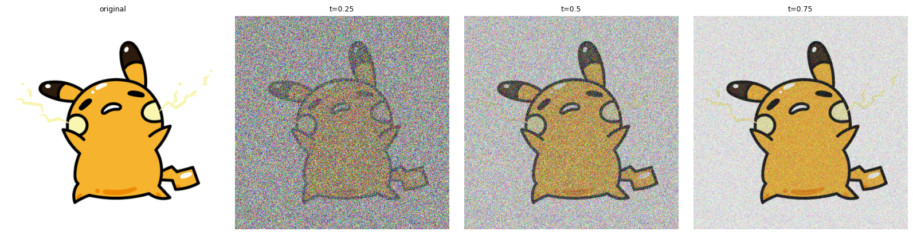
Part A / 1.2
1.2 — Gaussian denoising
To denoise the image using a simple method, I first divided the noisy image by t to restore the original image amplitude. Then I used Gaussian blurring to remove some of the noise. The low pass filter reduces the high-frequency noise but also makes Pikachu’s edges and smaller details blurry specifically the high frequency details relevant to pikachu. At larger t values, the input already has less noise, so a weaker blur is enough to get a result closer to the original image.

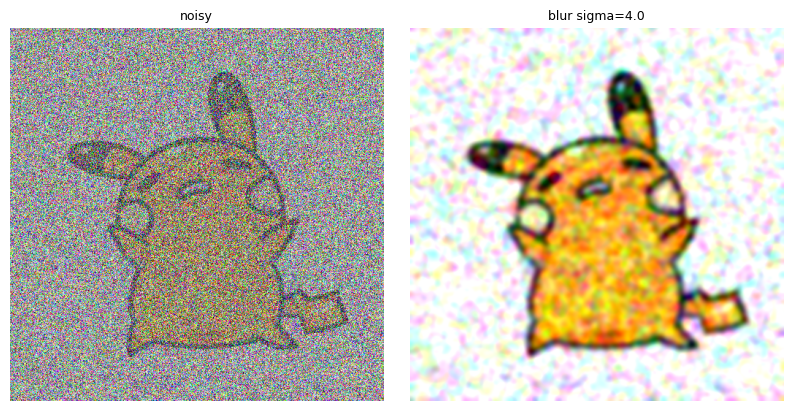

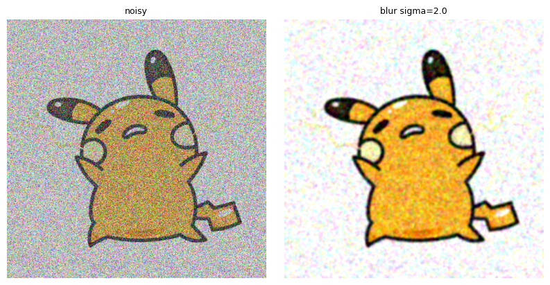

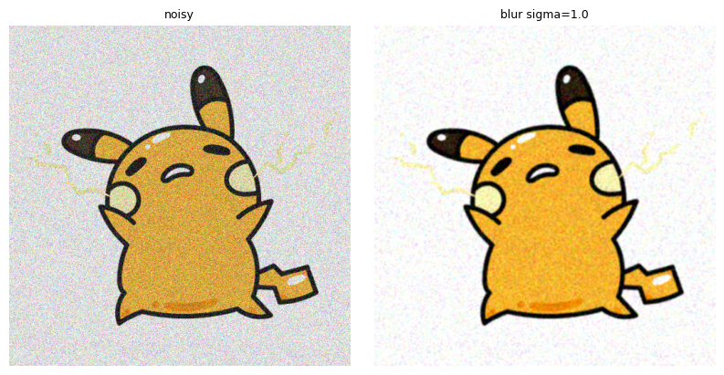
Part A / 1.3
1.3 — One-step denoising
One-step denoising predicts the clean image with the help of a flow model. I estimated the final clean image using x_t + (1 - t) * predict_velocity(x_t, t, condition). As t gets closer to 1, there is less noise in the input and less correction is needed. It performs significantly better than the Gaussian blur because it removes the noisy specks while keeping Pikachu’s outlines and colors much sharper.

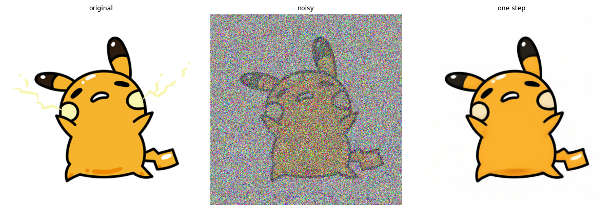


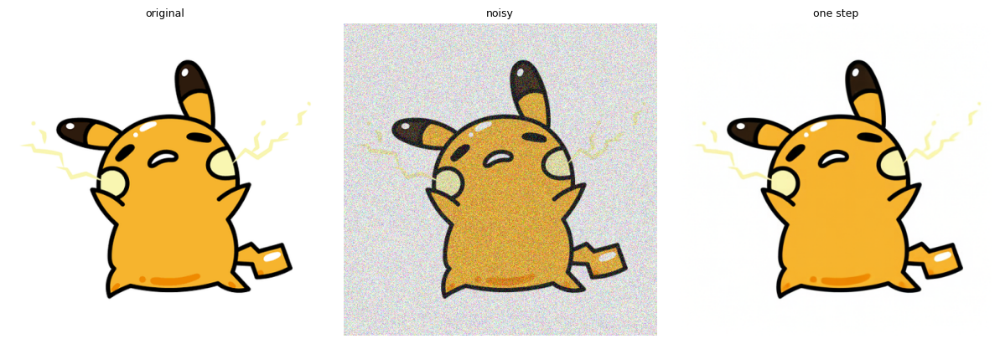
Part A / 1.4
1.4 — Visualizing velocity
The predicted update and the true update are super close, as shown in the images below. The biggest errors are along Pikachu’s outline and smaller features, while the model performs really well in flat areas and low frequency like the body. As t increases, the errors shown in the heatmap becomes significantly smaller, approaching none. This happens because the update is multiplied by the time away from 1 so a smaller update is needed as the image gets closer to ending clean image.

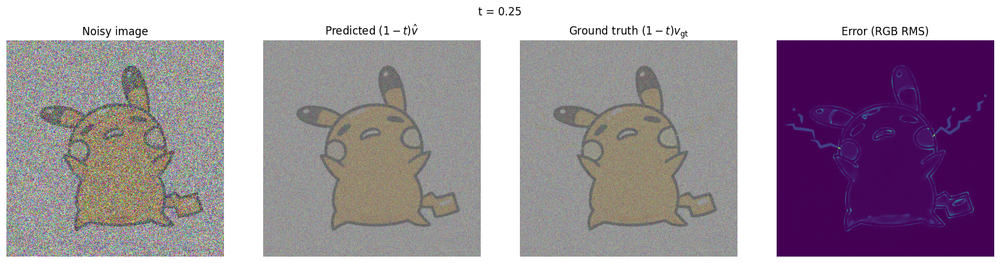

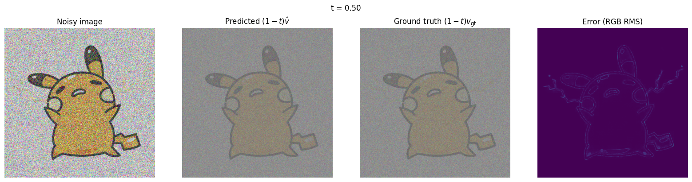

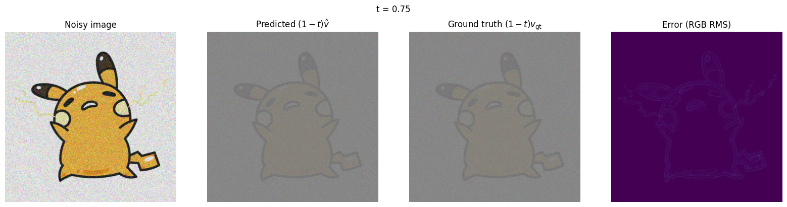
Part A / 1.5
1.5 — Iterative Euler denoising
For iterative denoising I started with the noisy image at t = 0.5 and took 25 Euler steps with a step size of 0.02. At each step, I predicted the velocity again using the updated image. The noise gradually disappears while Pikachu’s shape becomes clearer. The final one step and Euler results look really similar although both make small changes to the original outlines and shading. One step denoising surprisingly had a slightly lower MSE of 0.00140 compared to 0.00182 for Euler. This could happen because the repeated Euler updates introduce small changes that move the result slightly farther from the exact original pixels, but euler updates still look more resembling to pikachu compared to the Gaussian blur method.

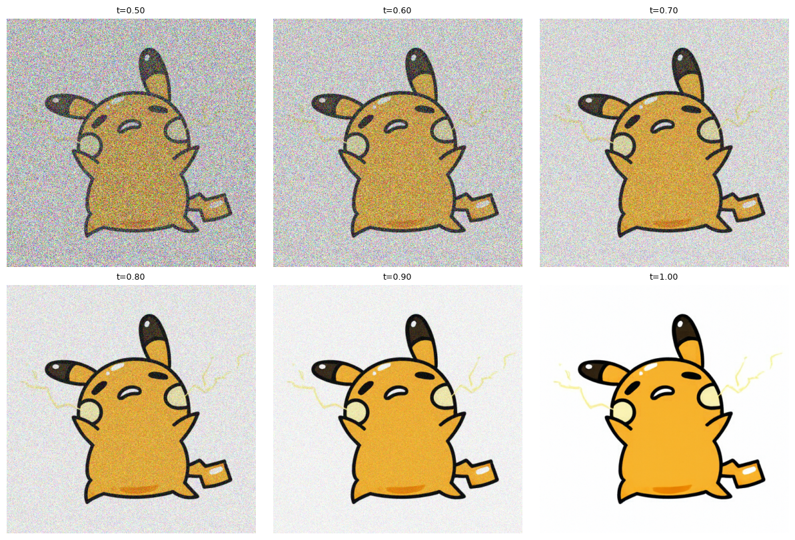

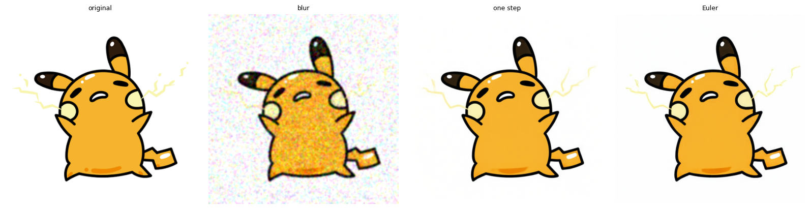
Part A / 1.6
1.6 — Generating images from noise
When generating images from pure noise with the prompt “a high quality photo,” the model mostly produced pictures of people. Some results look convincing, but others have missing or distorted facial features. The model seems to favor portraits for this generic prompt

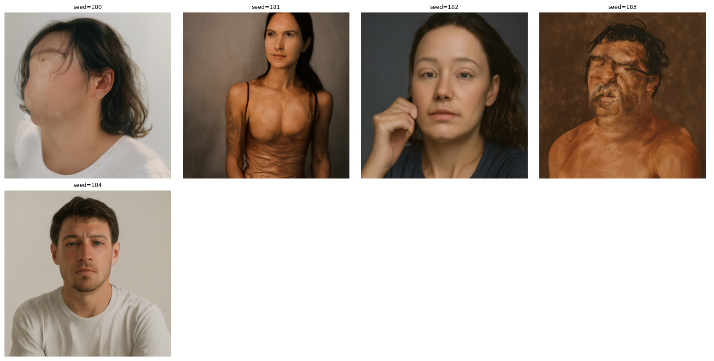
Part A / 2.1
2.1 — Classifier-free guidance
For classifier free guidance, I combined the conditional and unconditional velocity predictions using v_cond + w * (v_cond - v_uncond) with w = 7. I used the same initial noise seeds as the previous section to compare the results. The guided images have much more coherent faces and realistic bodies, and the weird features from the samples without guidance are mostly gone. The results also look more alike to each other unlike the classifier free.

Part A / 3.1
3.1 — Image-to-image editing
For editing, I mixed each original image with noise at different starting times and then used the model to generate the final image. At starting times closer to zero, there is very little information from the original image therefore the model has more freedom to change the subject. For the Campanile, the smaller time results mostly preserve a pale vertical shape and the blue background. As the starting time approaches 1 the tower becomes more and more similar to the campanile and the important features such as the clock and windows return.
The same pattern appears in my two Pikachu images. At low starting times, the model sometimes turns the input into completely unrelated objects, like a container, a pepper, or a phone. At larger starting times, the results look much closer to the original Pikachu images.


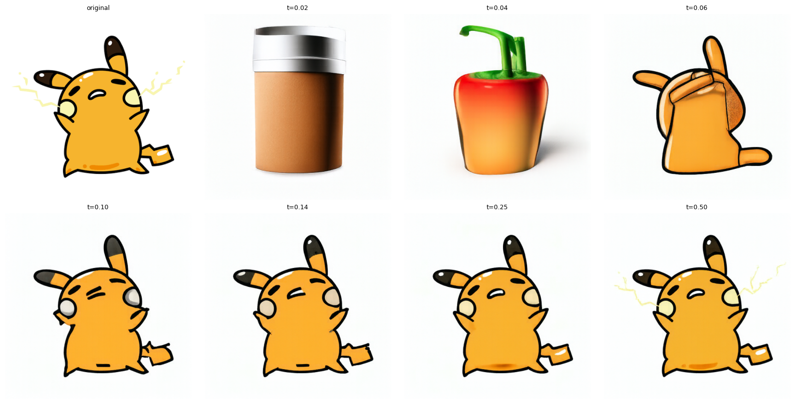

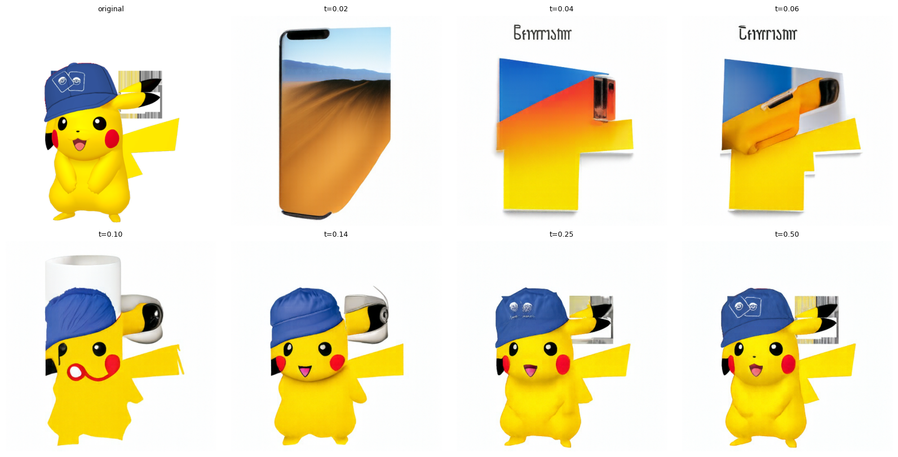
For the drawing images, the platypus became a human face, while the snail drawing became a blank rectangular object. At larger starting times, the details of the original image return and the image looks more noticeable to the clean inmage.

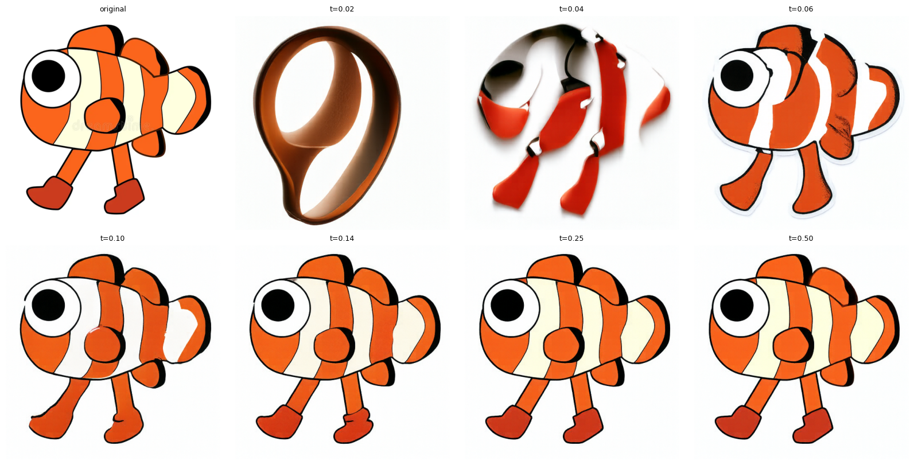

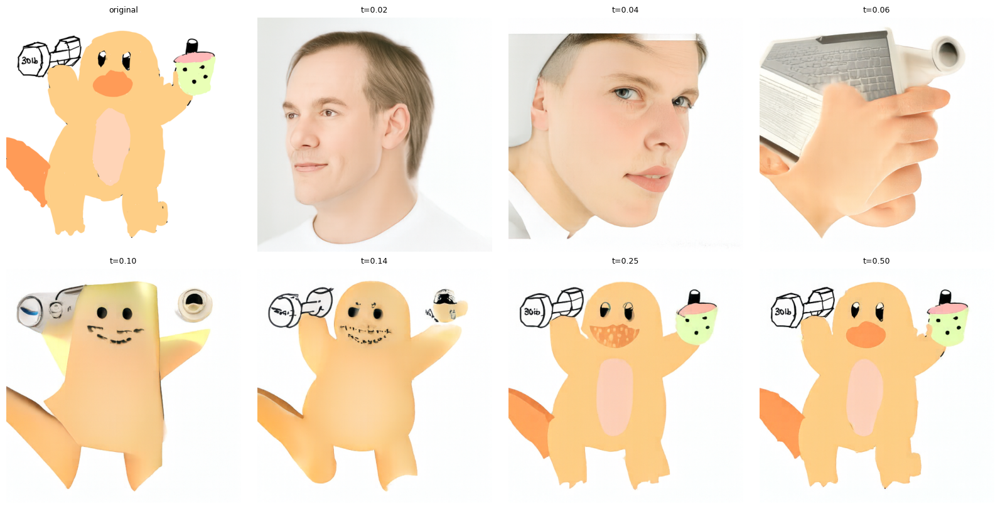

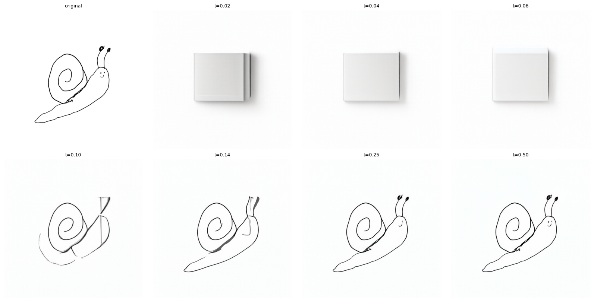
Part A / 3.2
3.2 — Text-guided editing
For text guided editing, I used the same procedure but replaced the generic photo prompt with a prompt describing the edit I wanted. For the Campanile I used the prompt “A photo of empire state building” and during the smaller start times the campanile becomes closer to the empire state building. However during the intermediate times, the image begins to blend the campanile’s shape with details from the Empire State Building. And as the time becomes closer to 1, the empire state building is more recognizable. For the first pikachu prompt, the electric shock prompt adds large blue lightning effects at smaller starting times. As the time increases, the result keeps more of the original pose and the large blue lightning becomes less noticeable and smaller. For the second Pikachu image which was to make pikachu drippy, the model decided to put the jeans around pikachu’s body instead of its legs.

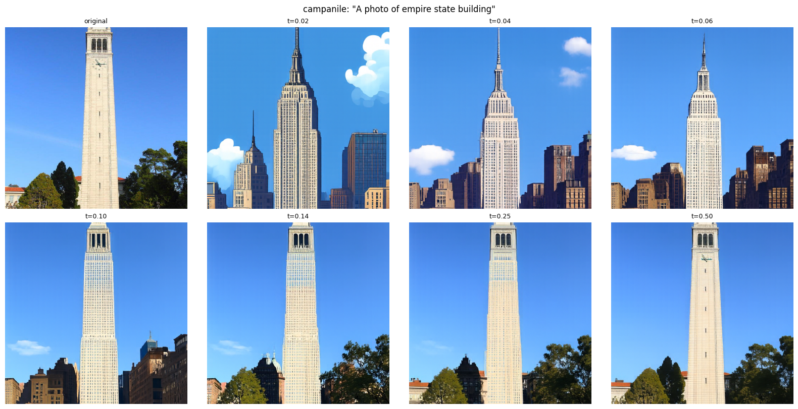

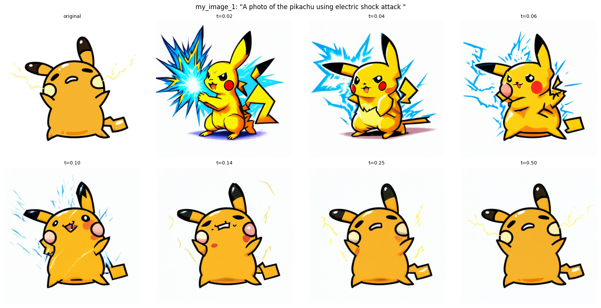

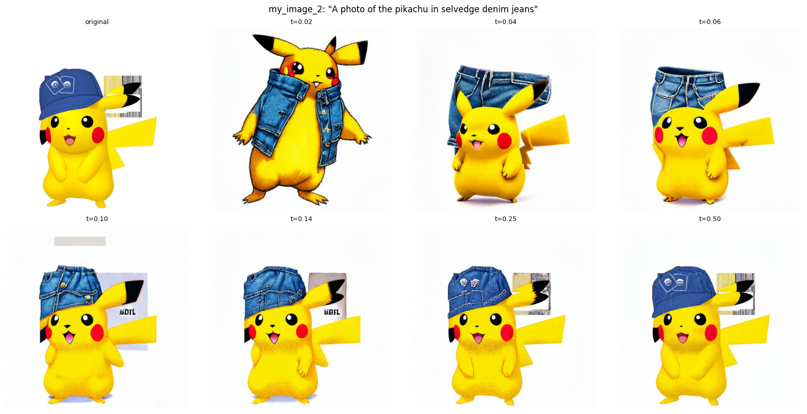
Part A / 3.3
3.3 — Visual anagrams
I averaged the guided velocity from the upright image towards prompt a with the rotated back velocity from the upside down image towards prompt b. This lets the model work toward two different prompts at the same time.
For the first result, which was surprisingly well the image looks a lot like a jellyfish and after rotating it, the orange mushroom cap and stem make the mushroom easier to see.
In the second result, the green shape looks like a pear when upright. After rotating it, the wider top and narrower bottom resemble a hot air balloon, and the thin brown stem look like ropes. However the pear interpretation is a lot stronger since the “brown basket” looks a lot more like a stem due to its thin structure.


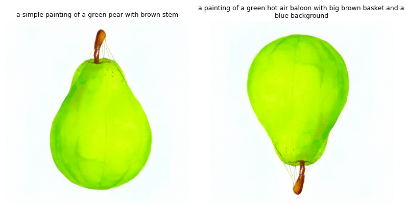
Part A / 3.4
3.4 — Hybrid images
I averaged out the low frequency velocity from the distant prompt with the high frequency velocity from the close up prompt. Both images significantly resemble the distant prompt when looked at far away and the close up prompt when taken a look close by this is due to us averaging the velocity of the the steering towards the two prompts and combining them at different frequencies.

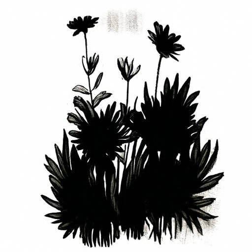
Distant: “a lithograph of a panda”

Distant: “a photo of an old man”
Part B
Flow matching from scratch.
Training denoisers and generating MNIST digits.
Part B / 1.1
1.1 — Implementing the UNet
For this section, I implemented the unet. The unet essentially encodes the image and then decodes to create the original image again, with skip connections to keep the high frequency features of the original image without aliasing.
Part B / 1.2
1.2 — Visualizing the noising process
To noise the image I simply added some noise to our training data and trained on those. As sigma increases the image becomes significantly more and more noisy. The digit becomes difficult to recognize when sigma approaches 1 and the image becomes entirely noise. Here are some examples at different levels of sigma.

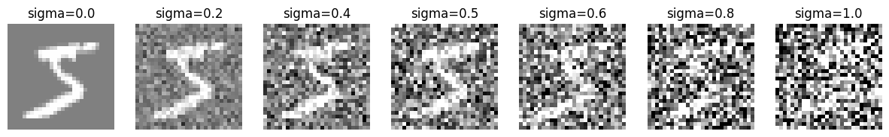
Part B / 1.2.1
1.2.1 — Training the denoiser
For the denoiser, I added noise to every image with a fixed level of noise (sigma = 0.5). We then changed the weights of the unet to minimize the loss function below so our predicted output can be close as possible to our original inputs.

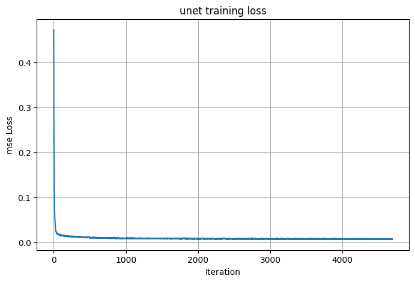


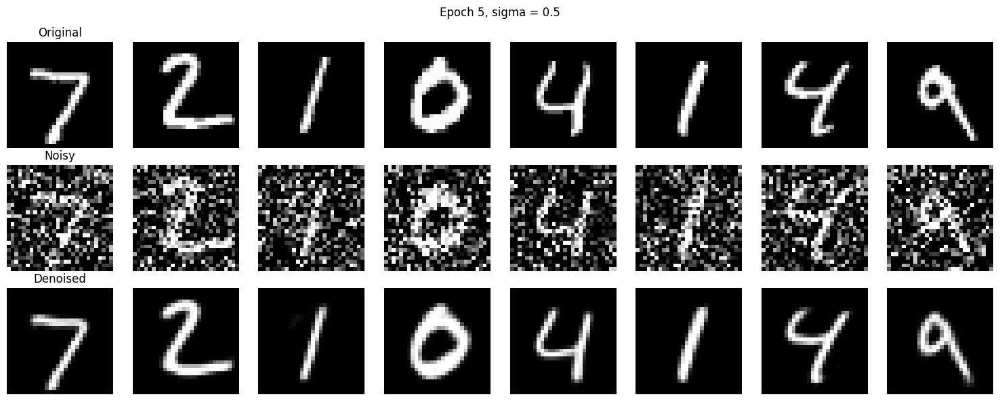
Part B / 1.2.2
1.2.2 — Out-of-distribution testing
The denoiser performed worse when trying to denoise higher noise levels compared to lower noise levels. The image below shows the examples of the denoiser trying to remove the noise at different levels of sigma.

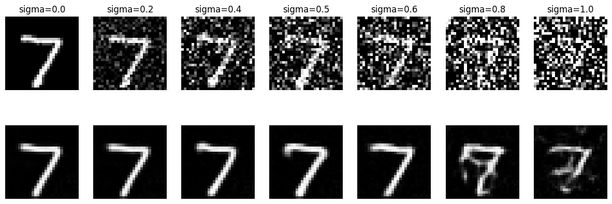
Part B / 1.2.3
1.2.3 — Denoising pure noise
For denoising pure noise, I used a random Gaussian noise image as the input and a clean digit as the target. One interesting observation is that the outputs look almost exactly the same even though the input noise is different. The output looks like a blurry average of the training digits. This happens because the noise has no relationship with the target digit, so the model cannot tell which digit to output. Since we are minimizing MSE loss, the model learns to output the average image instead.

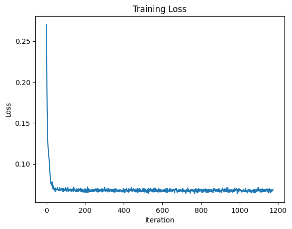

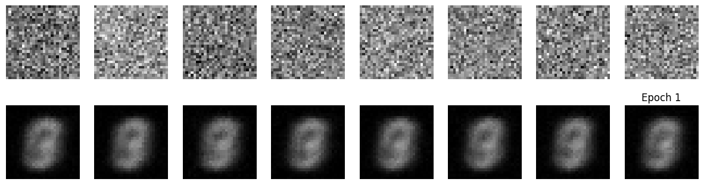

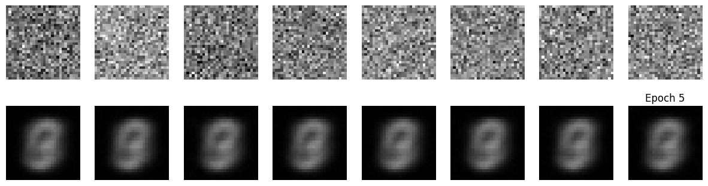
Part B / 2.1
2.1 — Adding time conditioning
For time conditioning, I passed t into fully connected blocks to get vectors that I could multiply with the UNet features. I applied them after the unflatten block and the first upsampling block. This lets the model know the current time so it can predict the flow based on where the image is between the noise and the clean digit.
Part B / 2.2
2.2 — Training the time-conditioned UNet
For training the time-conditioned UNet, I sampled a noise image and a time t, then interpolated the noise with a clean image using (1 - t) * noise + t * clean_image. We then trained the model to predict clean_image - noise, which is the velocity from the noise toward the clean image. I used Adam with a learning rate of 0.01 and an exponential scheduler to decrease the learning rate over ten epochs. The loss dropped quickly at the beginning and then stayed around a lower value toward the end.

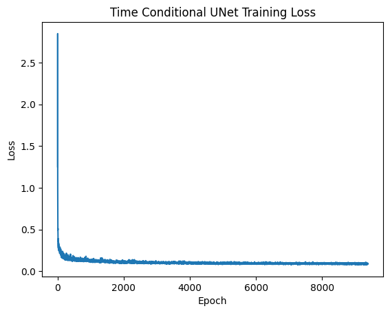
Part B / 2.3
2.3 — Sampling from the time-conditioned UNet
For sampling, I started with pure noise and used Euler steps to update the image using the predicted velocity. At every step, I predicted the velocity again with the updated image and time. The images below show the results after one, five, and ten epochs. After the first epoch, the outputs look pretty distorted, but after more training, they start looking like actual digits. Some digits still have weird shapes even after ten epochs.

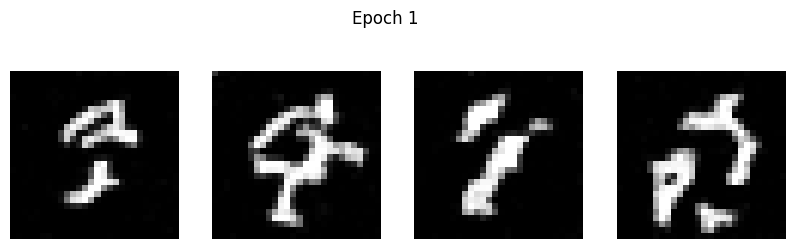

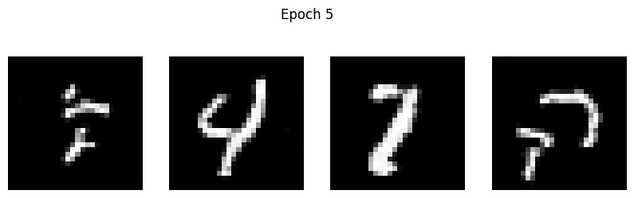

Part B / 2.4
2.4 — Adding class conditioning
For class conditioning, I converted the digit label into a one-hot vector and passed it through fully connected blocks. I then used the class vectors to multiply the UNet features and added the time vectors. This lets the model know which digit we want to generate. I also set the class vector to zero for 10% of the training examples so the model could learn to predict without a label, which we need for classifier-free guidance.
Part B / 2.5
2.5 — Training the class-conditioned UNet
The training process is pretty similar to the time-conditioned model, but now we also give the model the digit label. I trained it for ten epochs using Adam with an initial learning rate of 0.01 and the same exponential scheduler. The loss curve below shows that the loss drops a lot at the beginning and then changes less toward the end of training.

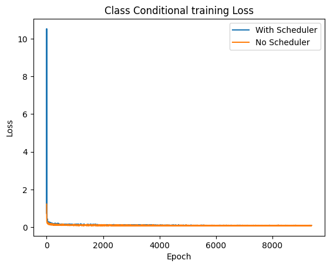
Part B / 2.6
2.6 — Sampling from the class-conditioned UNet
For sampling, I combined the conditional and unconditional velocities using v_uncond + 5 * (v_cond - v_uncond). I generated four images of each digit after one, five, and ten epochs. The class-conditioned model performs significantly better than the time-only model since most outputs already look like the requested digits after the first epoch. After more training, the digits become cleaner, and the four examples still have different shapes instead of looking exactly the same.

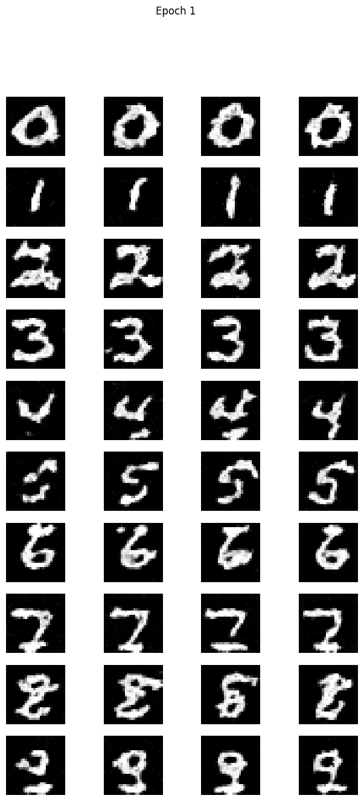

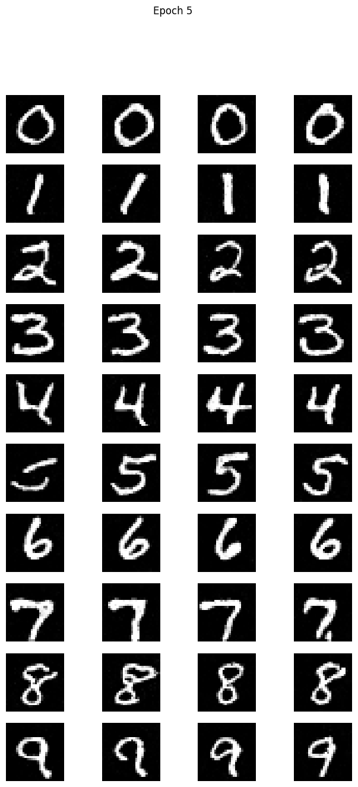

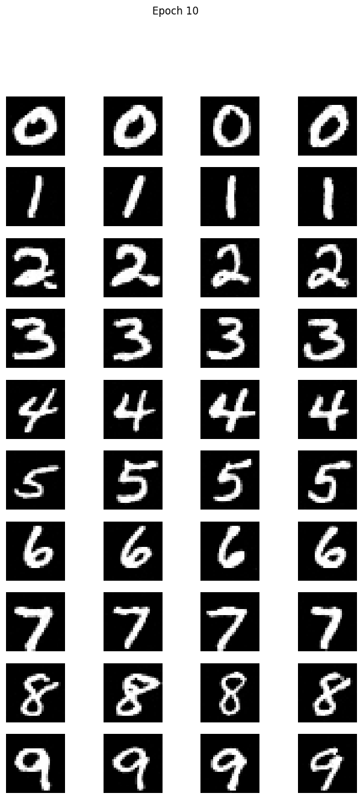
Part B / 2.6
2.6 — Removing the learning-rate scheduler
For removing the scheduler, I trained a new model with a fixed learning rate of 0.001 instead of starting at 0.01 and decreasing it. I used a smaller learning rate so the updates would stay small throughout training. The images below show that the results look pretty similar with and without the scheduler. Most digits are still recognizable, and I did not see a big difference in the quality of the final samples.

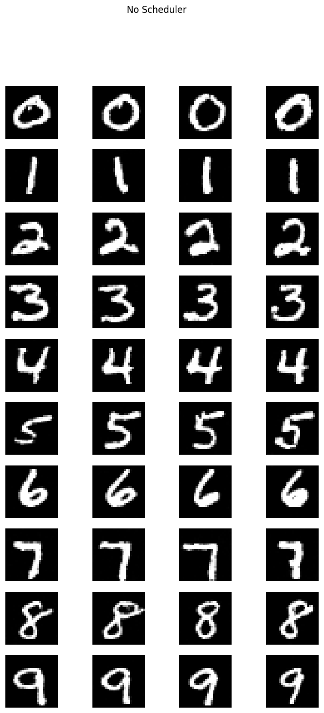